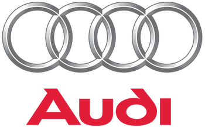

Audi

Audi is a German automobile manufacturer that designs, engineers, produces, markets and distributes luxury vehicles. Audi is a member of the Volkswagen Group and has its roots at Ingolstadt, Bavaria, Germany. Audi-branded vehicles are produced in nine production facilities worldwide.
The origins of the company are complex, going back to the early 20th century and the initial enterprises (Horch and the Audiwerke) founded by engineer August Horch; and two other manufacturers (DKW and Wanderer), leading to the foundation of Auto Union in 1932. The modern era of Audi essentially began in the 1960s when Auto Union was acquired by Volkswagen from Daimler-Benz. After relaunching the Audi brand with the 1965 introduction of the Audi F103 series, Volkswagen merged Auto Union with NSU Motorenwerke in 1969, thus creating the present day form of the company.
The company name is based on the Latin translation of the surname of the founder, August Horch. "Horch", meaning "listen" in German, becomes "audi" in Latin. The four rings of the Audi logo each represent one of four car companies that banded together to create Audi's predecessor company, Auto Union. Audi's slogan is Vorsprung durch Technik, meaning "Advancement through Technology". However, since 2007 Audi USA has used the slogan "Truth in Engineering". Audi, along with BMW and Mercedes are among the best-selling luxury automobile brands in the world.
Modern era
The new merged company was incorporated on 1 January 1969 and was known as Audi NSU Auto Union AG, with its headquarters based at NSU's Neckarsulm plant, and saw the emergence of Audi as a separate brand for the first time since the pre-war era. Volkswagen introduced the Audi brand to the United States for the 1970 model year. That same year, the mid-sized car that NSU had been working on, the K70, originally intended to slot between the rear-engined Prinz models and the futuristic NSU Ro 80, was instead launched as a Volkswagen.
After the launch of the Audi 100 of 1968, the Audi 80/Fox (which formed the basis for the 1973 Volkswagen Passat) followed in 1972 and the Audi 50 (later rebadged as the Volkswagen Polo) in 1974. The Audi 50 was a seminal design because it was the first incarnation of the Golf/Polo concept, one that led to a hugely successful world car. Ultimately, the Audi 80 and 100 (progenitors of the A4 and A6, respectively) became the company's biggest sellers, whilst little investment was made in the fading NSU range; the Prinz models were dropped in 1973 whilst the fatally flawed NSU Ro80 went out of production in 1977, spelling the effective end of the NSU brand. Production of the Audi 100 had been steadily moved from Ingolstadt to Neckarsulm as the 1970s had progressed, any by the appearance of the second generation C2 version in 1976, all production was now at the former NSU plant. Neckarsulm from that point onward would produce Audi's higher end models.
The Audi image at this time was a conservative one, and so, a proposal from chassis engineer Jörg Bensinger[26] was accepted to develop the four-wheel drive technology in Volkswagen's Iltis military vehicle for an Audi performance car and rally racing car. The performance car, introduced in 1980, was named the Audi Quattro, a turbocharged coupé which was also the first German large-scale production vehicle to feature permanent all-wheel drive through a centre differential. Commonly referred to as the Ur-Quattro (the Ur- prefix is a German augmentative used, in this case, to mean original and is also applied to the first generation of Audi's S4 and S6 Sport Saloons, as in UrS4 and UrS6), few of these vehicles were produced (all hand-built by a single team), but the model was a great success in rallying. Prominent wins proved the viability of all-wheel drive racecars, and the Audi name became associated with advances in automotive technology.
In 1985, with the Auto Union and NSU brands effectively dead, the company's official name was now shortened to simply Audi AG. At the same time the company's headquarters moved back to Ingolstadt and two new wholly owned subsidiaries; Auto Union GmbH and NSU GmbH, were formed to own and manage the historical trademarks and intellectual property of the original constituent companies (the exception being Horch, which had been retained by Daimler-Benz after the VW takeover), and to operate Audi's heritage operations.
In 1986, as the Passat-based Audi 80 was beginning to develop a kind of grandfather's car image, the type 89 was introduced. This completely new development sold extremely well. However, its modern and dynamic exterior belied the low performance of its base engine, and its base package was quite spartan (even the passenger-side mirror was an option.) In 1987, Audi put forward a new and very elegant Audi 90, which had a much superior set of standard features. In the early 1990s, sales began to slump for the Audi 80 series, and some basic construction problems started to surface In the early part of the 21st century, Audi set forth on a German racetrack to claim and maintain several world records, such as top speed endurance. This effort was in-line with the company's heritage from the 1930s racing era Silver Arrows.
Through the early 1990s, Audi began to shift its target market upscale to compete against German automakers Mercedes-Benz and BMW. This began with the release of the Audi V8 in 1990. It was essentially a new engine fitted to the Audi 100/200, but with noticeable bodywork differences. Most obvious was the new grille that was now incorporated in the bonnet.
By 1991, Audi had the four-cylinder Audi 80, the 5-cylinder Audi 90 and Audi 100, the turbocharged Audi 200 and the Audi V8. There was also a coupe version of the 80/90 with both 4- and 5-cylinder engines.